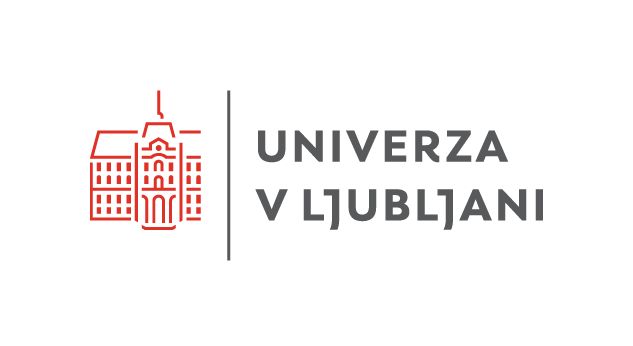
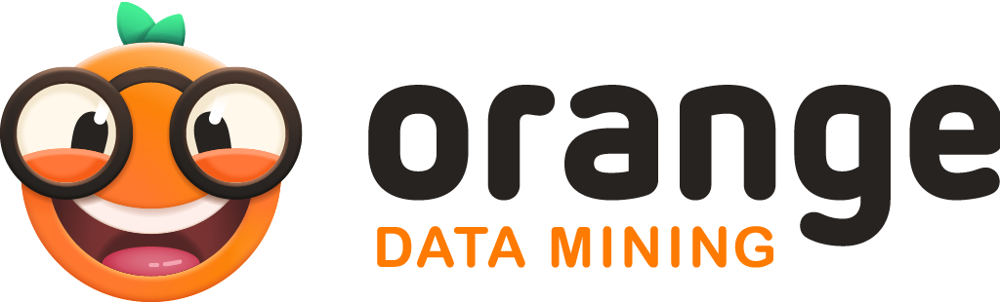
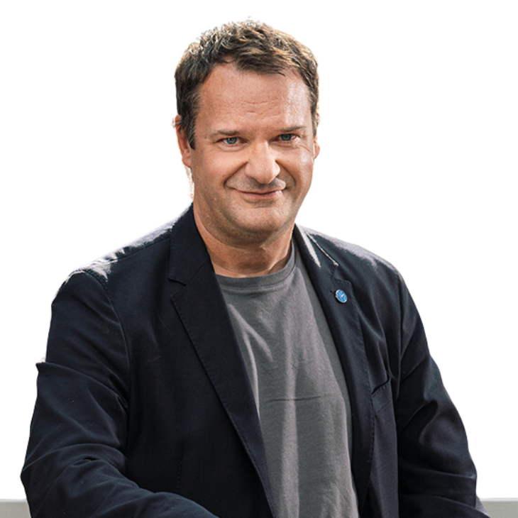
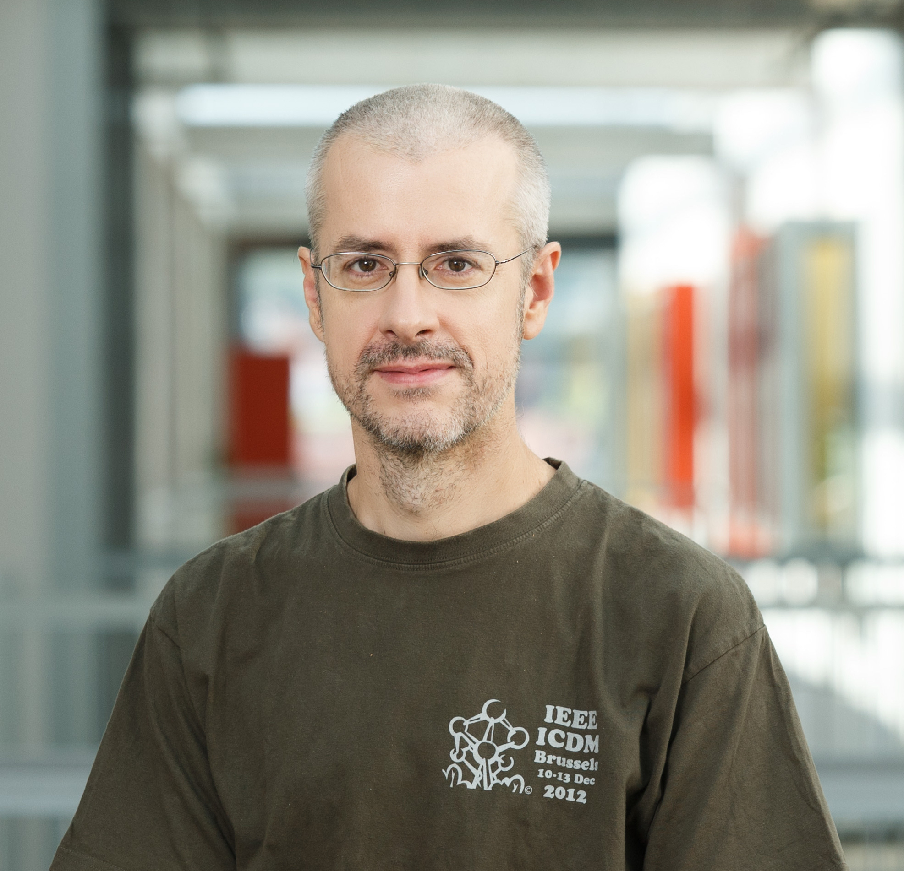

Classroom Training
After only a few hours of in-class training you will understand key machine learning algorithms and be able to apply them to a wide range of problems. No coding, no math - just visualizations and interactive data exploration!

Pick the right course for you
or contact us for a custom-designed course
|  |  |
Komu so tečaji namenjeni?
Tečaji so zasnovani za:
- odločevalce, ki potrebujejo strateški vpogled v možnosti uporabe umetne inteligence,
- inženirje, ki želijo hitro preizkusiti modele brez obsežnega programiranja,
- vodje projektov in strokovnjake, ki iščejo konkretne rešitve za analizo podatkov.
Kaj pridobite?
- Praktične veščine uporabe umetne inteligence z resničnimi podatki
- Delo z orodjem Orange Data Mining
- Mikrodokazilo in potrdilo o opravljenem tečaju, izdano s strani Univerze v Ljubljani
Predznanje programiranja ni potrebno, dobro pa je, da znate delati s preglednicami (npr. Excel)
Tečaji
Od podatkov do odločitev: Praktična uporaba umetne inteligence za podjetja (1 ECTS)
Umetna inteligenca že danes oblikuje trg in ključne odločitve. Ni več le orodje prihodnosti, temveč nuja za podjetja, ki želijo ostati konkurenčna. Ta tečaj vam ponuja hiter in jasen vpogled v njene ključne koncepte, metode, možnosti uporabe in trende – brez programiranja in zapletenih tehničnih podrobnosti. Spoznali boste temeljne principe umetne inteligence in strojnega učenja, vrste podatkov, ki jih ti pristopi zahtevajo ter pregled osnovnih metod, ki vključujejo gručenje, napovedne modele in njihovo uporabo na slikah in besedilih. Pojasnili bomo tudi, kako iz teh metod izhajajo sodobna orodja generativne umetne inteligence, kot so veliki jezikovni modeli, ter kje v vaših procesih se skrivajo priložnosti za strateško uporabo in premišljeno uporabo teh tehnologij v podjetju ali organizaciji. Posebej primerno za vodje in odločevalce.
Razložljivost v umetni inteligenci: Kako zgraditi zaupanje v avtomatizirane odločitve (1ECTS)
Razmišljate o vpeljavi UI v svoje procese in si želite razumeti, kako v resnici sprejema odločitve? Razložljivost umetne inteligence je ključna za krepitev zaupanja, zmanjšanje tveganj in usklajenost z zakonodajo. Na tečaju boste spoznali, kaj pomeni razložljivost umetne inteligence, kdaj je pomembna in kako jo dosežemo v praksi. Primerjali bomo razložljive modele in t. i. "črne škatle" ter pokazali, kako lahko preverimo, zakaj je model sprejel določeno odločitev – na primer pri zavrnitvi kreditne vloge. Razpravljali bomo tudi o razmerju med razložljivostjo in točnostjo modelov ter kako razložljivost pomaga pri sprejemanju boljših odločitev. Posebej primerno za vodilne kadre.
Kaj se skriva v vaših podatkih? Odkrivanje poslovnih priložnosti z razkrivanjem skupin v podatkih (2 ECTS)
Podatki skrivajo dragocene informacije. Naučite se, kako jih razkriti in uporabiti s pomočjo umetne inteligence – brez programiranja. Na tečaju se boste preko praktičnega dela s programom Orange naučili prepoznavati skupine, vzorce in skrite povezave v podatkih. Spoznali boste osnovne tehnike gručenja, metode za ocenjevanje rezultatov, pristope za razlago dobljenih skupin in vizualizacijo podatkov v dveh dimenzijah. Gručenje boste uporabili na tabelaričnih podatkih, besedilih in slikah – na primer pri iskanju različnih tipov strank za učinkovitejše ciljno trženje. Tečaj je posebej primeren za tehnične profile, ki želijo umetno inteligenco uporabljati pri reševanju konkretnih izzivov v podjetju.
Umetna inteligenca v podjetju: Kako zgraditi modele za napovedovanje trendov in obvladovanje poslovnih tveganj (2 ECTS)
Kako pravočasno prepoznati priložnosti in tveganja v poslovanju? Na tečaju boste spoznali, kako v praksi razviti napovedne modele za različne scenarije, kot so odpovedi naprav, spremembe v prodaji ali odhod strank. Naučili se boste osnov strojnega učenja, uporabe preprostih napovednih metod (klasifikacijska drevesa, logistična regresija), ocenjevanja njihove točnosti in razlage rezultatov. Modele boste preizkusili na atributnih podatkih, besedilih in slikah ter spoznali, kako njihova kompleksnost vpliva na učinkovitost. Tečaj je namenjen tehničnim profilom, ki želijo z umetno inteligenco podpreti bolj strateško usmerjeno odločanje v poslovnem okolju.
Od mnenj strank do kakovosti izdelkov: Pametna analiza besedil in slik (2 ECTS)
Umetna inteligenca odpira nove možnosti pri avtomatizirani analizi besedil in slik, kar omogoča hitrejše in natančnejše vpoglede v podatke, kot so povratne informacije strank in kakovost izdelkov s pomočjo analize besedil in slik. Na tečaju boste na praktičen način spoznali, kako s strojnim učenjem, logistično regresijo in nevronskimi mrežami obdelamo besedila in slike ter jih pretvorimo v vektorske predstavitve za nadaljnjo analizo. Metode gručenja in napovedne modele bomo uporabili za reševanje konkretnih nalog, kot so analiza mnenj strank ali avtomatsko razvrščanje slik v kategorije. Tečaj je namenjen zlasti tehničnim profilom, ki želijo umetno inteligenco uporabiti pri razumevanju uporabniških izkušenj in izboljšanju kakovosti izdelkov.
Gradnja pametnih asistentov: Kako razviti učinkovite pogovorne robote za podjetja (2 ECTS)
Pogovorni roboti postajajo nepogrešljiv del digitalne komunikacije. Na tem tečaju se boste naučili, kako jih razviti in prilagoditi potrebam podjetja. Spoznali boste ključne metode obdelave naravnega jezika in praktične pristope k razvoju klepetalnikov, ki pomagajo izboljšati uporabniško podporo. Pridobljena znanja boste lahko takoj uporabili za izboljšanje uporabniške izkušnje in poslovnih procesov. Tečaj je namenjen tehničnim profilom.
Kako deluje ChatGPT? Ključ do boljše uporabe (2 ECTS)
ChatGPT in sorodne aplikacije ponujajo več, kot si predstavljate. Razumevanje, kaj se skriva v ozadju vam omogoča, da v polnosti izkoristite njihove prednosti, ki segajo preko običajne uporabe. Na tečaju boste spoznali, kako učinkovito komunicirati z umetno inteligenco. S praktičnimi primeri boste osvojili tehnike, ki vam bodo omogočile hitro in natančno izvajanje raznolikih nalog in sprostitev vašega ustvarjalnega potenciala.
Predavatelji in snovalci tečajev
Prof. dr. Blaž Zupan je redni profesor na Fakulteti za računalništvo in informatiko Univerze v Ljubljani in gostujoči profesor na Baylor College of Medicine v Teksasu, ZDA. Leta 2016 se je uvrstil na seznam 100 najvplivnejših inovatorjev srednje in vzhodne Evrope. Predava in raziskuje na področju odkrivanja znanj iz podatkov, strojnega učenja in umetne inteligence. Je prejemnik Puhove nagrade za vrhunske dosežke za razvoj programa Orange, dveh Zlatih plaket Univerze v Ljubljani, Fulbrightove štipendije, Zoisovega priznanja in šestih priznanj naj-učitelj s strani študentov FRI.
Prof. dr. Janez Demšar je redni profesor na Fakulteti za računalništvo in informatiko Univerze v Ljubljani, predaval je na Higher School of Economics v Moskvi in Baylor College of Medicine v Teksasu, ZDA. Njegovo osrednje področje je strojno učenje in vizualizacija podatkov. Je prejemnik Puhove nagrade za vrhunske dosežke za razvoj programa Orange, Zlate plakete za zasluge pri razvoju Univerze v Ljubljani, Državne nagrade za izjemne dosežke na področju visokega šolstva in 16 priznanj za najboljšega učitelja po izboru študentov programa Višje strokovne šole na FRI.

Asist. raz. dr. Ajda Pretnar Žagar je raziskovalka na Fakulteti za računalništvo in informatiko Univerze v Ljubljani in na Inštitutu za novejšo zgodovino. Doktorirala je na temo kvantitativnih pristopov za raziskovanje v antropologiji. S povezovanjem strojnega učenja in antropologije razvija nove računalniško podprte metodologije za družboslovne vede. Poučuje podatkovno rudarjenje in strojno učenje z orodjem za podatkovno analitiko Orange Data Mining.
Prijava in kontakt
Prijavni obrazec: https://s.biolab.si/ui-tecaji-interes
E-pošta za dodatna vprašanja: erika.funa@fri.uni-lj.si
Izvajalec: Univerza v Ljubljani, Fakulteta za računalništvo in informatiko (UL FRI)
Trajanje tečajev: 2 do 3 tedne, skupno število ur od 25 do 50
Način izvedbe: Kombinirano (v živo na UL FRI in preko spleta)
Število udeležencev v skupini: od 10 do 30
Začetek izvajanja: jesen/zima 2025
Potrdilo: udeleženci za uspešno opravljen tečaj prejmejo potrdilo in mikrodokazila UL (1 ECTS = 25 do 30 pedagoških ur, ki vključujejo tako predavanja kot samostojno delo)
Cena: okoli 500 EUR na udeleženca
“Playing with data is fun. It's like a detective story, where data gives you clues and you dig ever deeper into the mystery until finding the hidden treasure, the cunning murderer, or the mischievous gene.”

Janez Demšar, prof. dr.
Lecturer